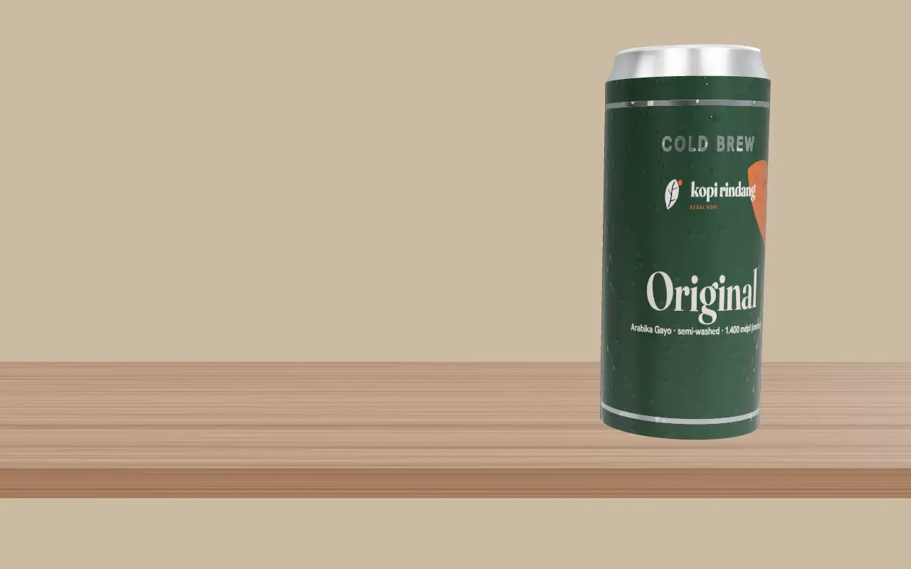
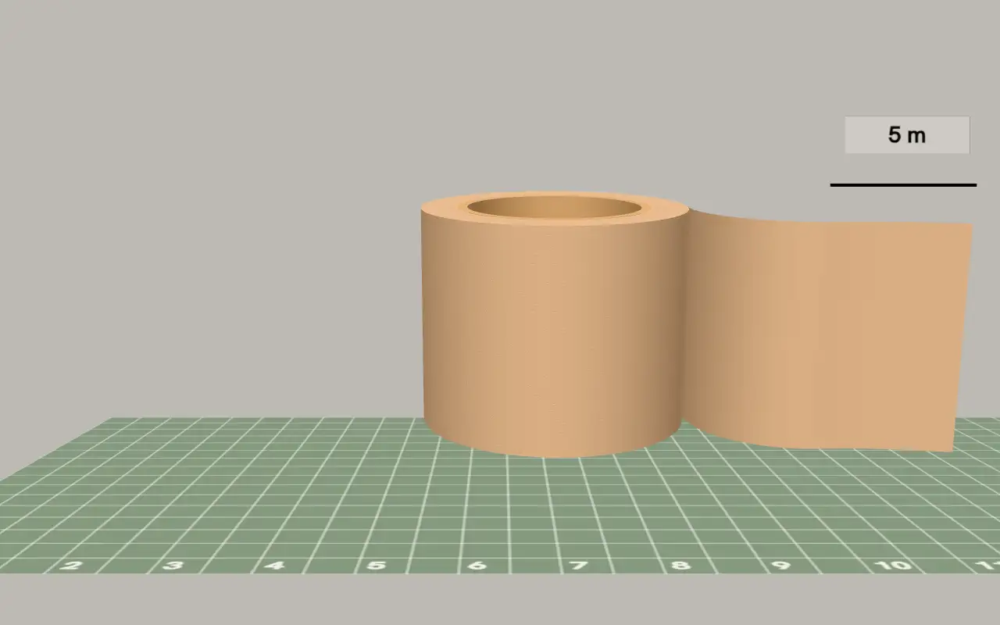
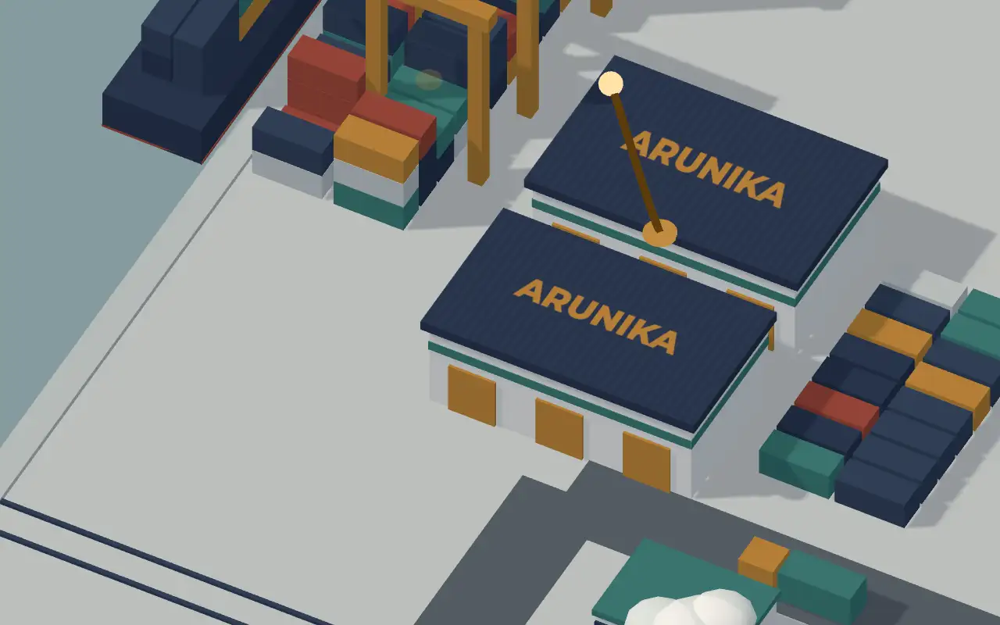

Kaleng kopi, gulungan tape, kota logistik: tiga website 3D
Gulir pelan. Kaleng berputar, gulungan tape terurai, lalu kita sampai di kota logistik. Dua bab pertama adalah produk, bab ketiga company profile.
Produk minuman · Kopi Rindang (proyek konsep – brand fiktif)
Gulir pelan, kaleng ikut berputarDirendam 18 jam di air dingin
Arabika Gayo digiling kasar dan direndam dalam air dingin selama 18 jam di lemari pendingin. Disaring dua kali: sekali dengan kain, sekali dengan kertas. Tanpa air panas, jadi rasanya lebih lembut dan pahitnya tidak menusuk.
- 18 jamrendam dingin
- 2×saring (kain, kertas)
- 250 mlisi per kaleng
Original
Cokelat pahit dan sedikit jeruk di awal, akhirnya bersih. Cocok bagi yang biasa minum americano.
Sajikan: langsung dari kulkas, atau dengan es batu.
Rp 19.500 (harga contoh)
Gula Aren
Karamel dengan sedikit kelapa dari gula aren cair. Manisnya lembut, tidak seperti sirup. Pas untuk jam tiga sore.
Sajikan: kocok dulu, tuang ke gelas berisi es.
Rp 21.500 (harga contoh)
Oat Latte
Susu oat memberi tekstur lembut dan sedikit rasa gandum, aren hanya setipis. Rasa kopinya tetap terasa.
Sajikan: dingin. Untuk versi hangat, tuang ke cangkir, jangan dipanaskan di dalam kaleng.
Rp 23.500 (harga contoh)
Pembeli memutar kaleng sebelum memesan
Di halaman asli, setiap rasa punya tombol pesan, ukuran, dan harga. Kaleng ini dibuat dari kode, bukan foto, jadi warna dan labelnya bisa diganti sesuai produk Anda.

Halaman produk · GgStore (karya sendiri)
Gulungan tape GgStore, bisa diputar
Contoh halaman produk untuk GgStore, toko perlengkapan olahraga milik pemilik Bikinin Studio. Seret gulungan untuk memutarnya.
Seret gulungan untuk memutarnyaLebar 4,5 cm
Ukuran tampil pada objeknya, jadi pembeli tidak perlu mengukur dengan penggaris.
- Lebar
- 4,5 cm
- Panjang
- 5 m per gulungan
- Kategori
- Body tape
5 meter per gulungan
Gulungan terurai mengikuti gulir halaman. Pembeli melihat panjang 5 m itu langsung, tidak hanya membaca angkanya.
12 pilihan warna
Pilih warna untuk melihatnya pada gulungan. Warna: Krem
Putih, merah, abu tua, kuning, pink, tosca, krem, oranye, biru muda, navy, ungu, dan hijau.
Gulungan ini model 3D dari ukuran produk asli, bukan foto.

Company profile · Arunika Logistik (perusahaan fiktif)
Dari rak gudang sampai pintu pembeli
Ikuti garis cokelat: paket disimpan di gudang, naik kapal atau truk, lalu diantar kurir ke alamat pembeli.
- 11tahun beroperasi
- 112kota tujuan
- 38.600 m²luas gudang
Angka contoh untuk demo.
Gudang 38.600 m² dengan stok tercatat per rak
Sistem gudang (WMS) mencatat stok per rak. Pesanan yang masuk sebelum pukul 14.00 dikemas pada hari yang sama.
Antarpulau pakai kontainer 20 dan 40 kaki
Kontainer berangkat dari pelabuhan utama dan dibongkar di dermaga tujuan.
Truk ke Jawa, Bali, dan Sumatra
Truk FTL (satu truk penuh) dan LTL (muatan gabungan). Muatan besar disambung dengan kereta barang.
Kurir sampai pintu pembeli
Van mengantar paket ke 112 kota. Pembeli melacak statusnya dari nomor resi.
Calon klien melihat jaringannya, tidak hanya membaca daftarnya
Pada company profile asli, rute dan angka diganti dengan milik perusahaan Anda. Company profile biasa mulai Rp 1jt. Versi 3D dihitung lewat penawaran tertulis.